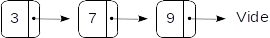
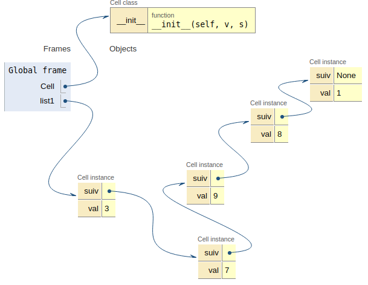
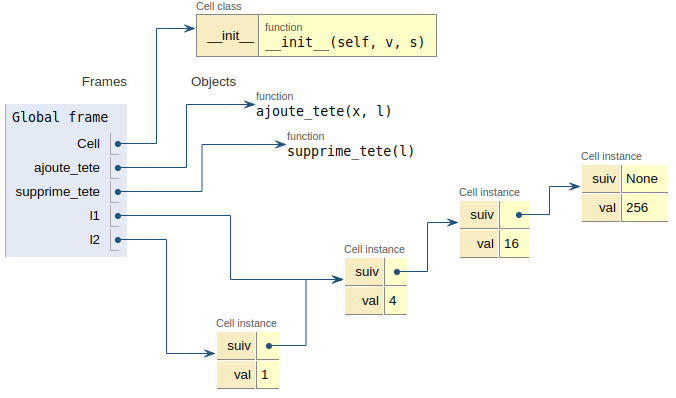
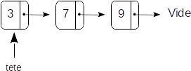
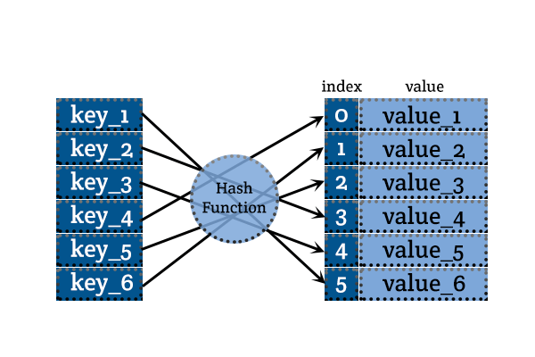

STRUCTURE DE DONNEES: LISTE¶
Repère historique¶
John McCarthy, prix Turing en 1971, créa en 1958 le langage Lisp qui signifie LISt Processor. Les listes constituent le fondement de Lisp.
Introduction¶
Une liste est une collection finie d’éléments qui se suivent. C’est une structure de données linéaire. Les doublons sont possibles. Une liste qui ne contient aucun élément est une liste vide.
On formalisera quelque peu cette définition dans un premier temps, avant de donner des implémentations possibles des opérations fondamentales sur les listes.
Enfin, on fera une comparaison entre l’opération de recherche d’un élément dans une liste chainée et dans un dictionnaire.
Comment formaliser une liste ?¶
Supposons une liste composée de trois éléments, ici des entiers: \(\ell = [3, 7, 9]\). Une façon de décrire cette liste consiste à voir \(\ell\) comme l’association:
d’un premier élément 3 qu’on nomme élément de tête;
et d’une liste \(\ell_1 = [7, 9]\) des éléments qui suivent (liste qu’on nomme souvent reste).
Cette description de \(\ell\) est aussi valable pour \(\ell_1\) qui est constituée:
d’un élément de tête : 7,
et d’un reste : \(\ell_2 = [9]\).
De la même façon que précédemment, la liste \(\ell_2\) est constituée:
d’un élément de tête : 9,
et d’un reste : \(\ell_3 = []\).
La liste \(\ell_3\) étant vide, elle ne possède pas d’élement de tête, et ne peut donc pas être décomposée comme nous venons de le faire à trois reprises.
Une liste \(\ell\) d’éléments d’un ensemble \(E\), est:
soit une liste vide;
soit un couple \((x,L)\) formé d’un élément de tête \(x\in E\) et d’une liste \(L\) d’éléments de \(E\):
Cette définition est récursive.
Implémentation avec des listes chainées¶
Une liste peut être implémentée de différentes façons. Python utilise des tableaux dynamiques redimensionnables pour son type list. On va voir ici d’autres réalisations possibles à base de listes chainées.
La base: une cellule¶
Dans cette réalisation concrète d’une liste, les éléments sont chainés entre eux.

Chaque élément, qu’on nomme ici cellule, contient une valeur et une référence (qui peut être vue comme une adresse mémoire) vers l’élément suivant.
On va représenter une cellule par une classe Cell.
class Cell:
""" Une classe pour les listes chainées"""
def __init__(self, v, s):
self.val = v
self.suiv = s
Une cellule est initialisée avec une valeur et une référence vers la cellule suivante. Si on considère que la liste vide est réalisée avec l’instruction None, la construction de la liste ci-dessus est alors facile:
list1 = Cell(3, Cell(7, Cell(9, None)))
Opérations sur les listes¶
Construire une liste¶
list1 = Cell(3, Cell(7, Cell(9, Cell(8, Cell(1, None)))))
On peut visualiser le résultat en copiant le code suivant dans Pythontutor.
class Cell:
""" Une classe pour les listes chainées"""
def __init__(self, v, s):
self.val = v
self.suiv = s
list1 = Cell(3, Cell(7, Cell(9, Cell(8, Cell(1, None)))))

Ajouter ou supprimer la tête¶
def ajoute_tete(x, l):
""" renvoie une liste composée de l'élément x et dont le reste est l"""
return Cell(x, l)
def supprime_tete(l):
"""renvoie une liste formée du reste de l"""
return l.suiv
Voici un exemple d’utilisation. Copier ce code dans Pythontutor.
class Cell:
""" Une classe pour les listes chainées"""
def __init__(self, v, s):
self.val = v
self.suiv = s
def ajoute_tete(x, l):
""" renvoie une liste composée de l'élément x et dont le reste est l"""
return Cell(x, l)
def supprime_tete(l):
"""renvoie une liste formée du reste de l"""
return l.suiv
l1 = Cell(4, Cell(16, Cell(256, None)))
l2 = ajoute_tete(1, l1)

Attention aux effets de bords non souhaités. Dans l’exemple ci-dessus, si la valeur de \(\ell_1\) change, alors la liste \(\ell_2\) sera affectée aussi !! Si on veut éviter cela, il faudra travailler sur des copies de la liste \(\ell\) dans les fonctions.
Obtenir la longueur de la liste¶
Une première possibilité est coder une fonction récursive:
si la liste est vide, sa longueur est nulle;
sinon sa longueur vaut 1 plus la longueur de la liste suivante (rappel: une liste est un élément suivi d’une liste, le reste).
def longueur(l):
""" renvoie la longueur d'une liste l"""
if l is None:
return 0
else:
return 1 + longueur(l.suiv)
list1 = Cell(3, Cell(7, Cell(9, Cell(8, Cell(1, None)))))
longueur(list1)
5
Travail
Coder une version itérative de la fonction longueur.
def longueur_iter(l):
""" Version itérative de la fonction 'longueur' """
# Supprimer l'instruction pass et proposer votre code
pass
#from exos import q1, q2
# AUTO EVALUATION - A EXECUTER
#q1.correction(longueur_iter)
Accéder au n-ième élément¶
On souhaite accéder (avoir la valeur) du n-ième élément d’une liste lst avec une fonction nieme(n, lst). On procèdera encore de manière récursive:
si \(n=0\), on renvoie simplement la valeur
lst.val;sinon, on cherche l’élément d’index \(n-1\) dans la liste suivante.
Deux préconditions doivent être vérifiées: la liste ne noit pas être vide et l’index \(n\) ne doit pas être négatif.
def nieme(n, lst):
""" renvoie le nième élément de la liste lst;
n: entier naturel,
lst: liste non vide
"""
assert n >= 0 and l is not None, "Erreur: accès impossible"
# Compléter avec votre code
# AUTO EVALUATION - A EXECUTER
#q2.correction(nieme)
Concaténer deux listes¶
A voir en exercice
Encapsulation dans une classe¶
Une pratique courante consiste à créer une classe Liste. Les instances auront un attribut tete qui indique la tête de la liste ou None si la liste est vide. Les méthodes seront bâties à partir des fonctions précédentes.
Un objet de type Liste

class Liste:
""" Une classe fournissant des listes chainées"""
def __init__(self):
self.tete = None
def estvide(self):
return self.tete is None
def ajoute_tete(self, x):
""" ajoute l'élément x à la liste courante"""
self.tete = Cell(x, self.tete)
def supprime_tete(self):
"""renvoie une liste formée du reste de la liste courante"""
self.tete = self.tete.suiv
def taille(self):
""" renvoie la longueur d'une liste l"""
def longueur(l):
if l is None:
return 0
else:
return 1 + longueur(l.suiv)
return longueur(self.tete)
def acces_nieme(self, n):
""" renvoie le n-ième élément de la liste courante, les
éléments étant indexés à partir de zéro.
"""
def nieme(n, lst):
assert n >= 0 and lst is not None, "Erreur: accès impossible"
if n == 0:
return lst.val
else:
return nieme(n - 1, lst.suiv)
return nieme(n, self.tete)
Travail
Utiliser cette classe pour construire une liste formée des éléments 27, 9, 3 (la tête est la cellule qui contient 27).
Récupérer l’élément d’index \(n=1\). Le résultat est-il conforme à celui attendu ?
Vérifier vos résultats avec l’application pythontutor
# Questions 1 et 2
# Votre code ici
Code à copier dans Pythontutor
class Cell:
""" Une classe pour les listes chainées"""
def __init__(self, v, s):
self.val = v
self.suiv = s
class Liste:
""" Une classe fournissant des listes chainées"""
def __init__(self):
self.tete = None
def estvide(self):
return self.tete is None
def ajoute_tete(self, x):
""" ajoute l'élément x à la liste courante"""
self.tete = Cell(x, self.tete)
def supprime_tete(self):
"""renvoie une liste formée du reste de l"""
self.tete = self.tete.suiv
def taille(self):
""" renvoie la longueur d'une liste l"""
def longueur(l):
if l is None:
return 0
else:
return 1 + longueur(l.suiv)
return longueur(self.tete)
def acces_nieme(self, n):
""" renvoie le n-ième élément de la liste courante"""
def nieme(n, lst):
assert n >= 0 and lst is not None, "Erreur: accès impossible"
if n == 0:
return lst.val
else:
return nieme(n - 1, lst.suiv)
return nieme(n, self.tete)
Rechercher un élément: comparaison dictionnaire / liste¶
Lors de la recherche d’un élément dans un dictionnaire, sa clé est d’abord passée à une fonction (fonction de hashage) qui calcule un index permettant sa localisation. La complexité de cette opération est constante (\(O(1)\)).
.
Lors de la recherche dans une liste, on doit parcourir séquentiellement celle-ci, jusqu’à trouver l’élément. Dans le pire des cas, la complexité de cette opération est en \(O(n)\).